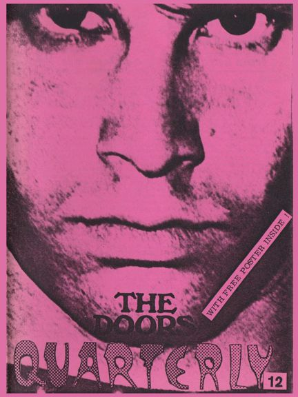

Depending on your computer's safety settings (antivirus, firewall, etc.) the download may generate a standard warning, that is because the magazine is a flipbook in the .EXE file format. We guarantee that the file is absolutely harmless and perfectly safe. |
A new window will open with the magazine for you to read online without the need to download it onto your computer. Again, we guarantee that it's absolutely harmless and perfectly safe. |
|||
|  | Even further back into the past
with The Doors Quarterly Magazine #12, which got
published in the Fall of 1986 ... about 36 years ago ...
It is pretty tough to remember exactly what was going on at that time, but checking this issue and the "Talk about the Doors" section of The Doors Quarterly Magazine always makes things a bit easier. This was the first DQ to include a free black/white poster showing 4 rare Morrison in concert photos taken by George Shuba on August 3, 1968 at the Public Auditorium in Cleveland, Ohio. This issue also contained a small booklet with German translations of a few French articles published in DQ 10 and DQ 11. Did you know that concert promoter Bill Graham was initially chosen to produce the upcoming "The Doors" movie?! The working title then was "Riders on the Storm" and nobody knew anything about the actors yet. My first attempt to analyse the video clip of "The Unknown Soldier" (in German) and an interesting article on Ray Manzarek's new album "The Whole Thing Started with Rock & Roll Now It's Out of Control" (from Rolling Stone, April 1975) follow. Also included is a fine piece written by David Prockter, for Dark Star Magazine, on Ray's solo albums. Michael Horowitz wrote a truly great report on Jim Morrison's photo session for Vogue Magazine (I wish all photos of that session would be published one day). His report continues with a few unique remarks by photographer Gloria Stavers and ends with an insightful view on Jim's former school in Alexandria - George Washington High School. My "Notes from the Underground" describe a fine bootleg record, "Singing the Blues Vol. 2", which (at that time) contained never-before-published tracks from The Matrix club in San Francisco in March 1967. Not all songs on this album are Matrix tunes. "Mannish Boy" is from Monterey, December 1967, "Money" is from Danbury, October 1967, and "Good Rockin'" is from Bremen, Germany, May 1972. The pressing I had at that time was on yellow vinyl. Ellen Sanders wrote first-hand information on the chaos at The Doors' Singer Bowl concert (August 2, 1968) from her backstage point of view - I have no idea where her article "The Kingdom has crumbled" stems from. The printing quality of the article is really bad, sorry about that. The xerox machines in those days were still pretty bad. If anyone out there has a better copy, please mail us a scan - we'd love to add it to this online digital DQ. Thank you. For producing this DQ 12 there was no computer around - everything got typed on my ancient electric typewriter and the bigger letters for headings used to be rub-off letters on small plastic sheets or plastic lettering tapes. The entire DQ 12 just got xeroxed ... Enjoy your digital version and let us know what you think ... we will continue soon by publishing a digital version of DQ 11. Thanks to Kevin Chiotis for all of his work! A splendid time is guaranteed for all! And don't forget: Please note that your digital copy of The Doors Quarterly Magazine 12 hasn't been altered in any way. You get it as it was published in late 1986 (!). Be aware that all addresses (private, phone including my own address in this issue on page 2) are certainly no longer valid anymore. Books, vinyl records, CDs and other stuff might not be available anymore. Please do not respond to any of the small ads or blame anyone for incorrect details or typos - all writers just did the best they could do back at the beginning of Spring in 1987. And all this happened without any computers, without any emails and of course without the internet. PS: ... if you would like to obtain an original paper copy of this Doors Quarterly Magazine 12 I have to tell you that unfortunately there are absolutely no copies left at all! Thank you! Rainer Moddemann. |
|||